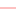

<!doctype html>
<html lang="en">
    <head>
        <meta charset="utf-8">
        <meta http-equiv="X-UA-Compatible" content="IE=edge">
        <meta name="viewport" content="initial-scale=1,user-scalable=no,maximum-scale=1,width=device-width">
        <meta name="mobile-web-app-capable" content="yes">
        <meta name="apple-mobile-web-app-capable" content="yes">
        <link rel="stylesheet" href="css/leaflet.css">
        <link rel="stylesheet" href="css/qgis2web.css"><link rel="stylesheet" href="css/fontawesome-all.min.css">
        <link rel="stylesheet" href="css/leaflet-control-geocoder.Geocoder.css">
        <link rel="stylesheet" href="css/leaflet-measure.css">
        <style>
        #map {
            width: 1619px;
            height: 817px;
        }
        </style>
        <title></title>
    </head>
    <body>
        <div id="map">
        </div>
        <script src="js/qgis2web_expressions.js"></script>
        <script src="js/leaflet.js"></script>
        <script src="js/leaflet.rotatedMarker.js"></script>
        <script src="js/leaflet.pattern.js"></script>
        <script src="js/leaflet-hash.js"></script>
        <script src="js/Autolinker.min.js"></script>
        <script src="js/rbush.min.js"></script>
        <script src="js/labelgun.min.js"></script>
        <script src="js/labels.js"></script>
        <script src="js/leaflet-control-geocoder.Geocoder.js"></script>
        <script src="js/leaflet-measure.js"></script>
        <script src="data/Drainage_Basin_1.js"></script>
        <script src="data/Drainage_System_2.js"></script>
        <script src="data/JamicherraSpring_3.js"></script>
        <script>
        var highlightLayer;
        function highlightFeature(e) {
            highlightLayer = e.target;
            highlightLayer.openPopup();
        }
        var map = L.map('map', {
            zoomControl:true, maxZoom:28, minZoom:1
        }).fitBounds([[23.8278367184702,91.74147554554837],[24.0830034183462,92.24773880162137]]);
        var hash = new L.Hash(map);
        map.attributionControl.setPrefix('<a href="https://github.com/tomchadwin/qgis2web" target="_blank">qgis2web</a> &middot; <a href="https://leafletjs.com" title="A JS library for interactive maps">Leaflet</a> &middot; <a href="https://qgis.org">QGIS</a>');
        var autolinker = new Autolinker({truncate: {length: 30, location: 'smart'}});
        var measureControl = new L.Control.Measure({
            position: 'topleft',
            primaryLengthUnit: 'meters',
            secondaryLengthUnit: 'kilometers',
            primaryAreaUnit: 'sqmeters',
            secondaryAreaUnit: 'hectares'
        });
        measureControl.addTo(map);
        document.getElementsByClassName('leaflet-control-measure-toggle')[0]
        .innerHTML = '';
        document.getElementsByClassName('leaflet-control-measure-toggle')[0]
        .className += ' fas fa-ruler';
        var bounds_group = new L.featureGroup([]);
        function setBounds() {
        }
        map.createPane('pane_googlesatellite_0');
        map.getPane('pane_googlesatellite_0').style.zIndex = 400;
        var layer_googlesatellite_0 = L.tileLayer('https://mt1.google.com/vt/lyrs=s&x={x}&y={y}&z={z}', {
            pane: 'pane_googlesatellite_0',
            opacity: 1.0,
            attribution: '',
            minZoom: 1,
            maxZoom: 28,
            minNativeZoom: 0,
            maxNativeZoom: 18
        });
        layer_googlesatellite_0;
        map.addLayer(layer_googlesatellite_0);
        function pop_Drainage_Basin_1(feature, layer) {
            layer.on({
                mouseout: function(e) {
                    if (typeof layer.closePopup == 'function') {
                        layer.closePopup();
                    } else {
                        layer.eachLayer(function(feature){
                            feature.closePopup()
                        });
                    }
                },
                mouseover: highlightFeature,
            });
            var popupContent = '<table>\
                    <tr>\
                        <td colspan="2"><strong>OBJECTID</strong><br />' + (feature.properties['OBJECTID'] !== null ? autolinker.link(feature.properties['OBJECTID'].toLocaleString()) : '') + '</td>\
                    </tr>\
                    <tr>\
                        <td colspan="2">' + (feature.properties['Id'] !== null ? autolinker.link(feature.properties['Id'].toLocaleString()) : '') + '</td>\
                    </tr>\
                    <tr>\
                        <td colspan="2">' + (feature.properties['gridcode'] !== null ? autolinker.link(feature.properties['gridcode'].toLocaleString()) : '') + '</td>\
                    </tr>\
                    <tr>\
                        <td colspan="2">' + (feature.properties['Shape_Leng'] !== null ? autolinker.link(feature.properties['Shape_Leng'].toLocaleString()) : '') + '</td>\
                    </tr>\
                    <tr>\
                        <td colspan="2">' + (feature.properties['Shape_Area'] !== null ? autolinker.link(feature.properties['Shape_Area'].toLocaleString()) : '') + '</td>\
                    </tr>\
                </table>';
            layer.bindPopup(popupContent, {maxHeight: 400});
        }

        function style_Drainage_Basin_1_0() {
            return {
                pane: 'pane_Drainage_Basin_1',
                opacity: 1,
                color: 'rgba(77,175,74,1.0)',
                dashArray: '',
                lineCap: 'square',
                lineJoin: 'bevel',
                weight: 4.0,
                fillOpacity: 0,
                interactive: false,
            }
        }
        map.createPane('pane_Drainage_Basin_1');
        map.getPane('pane_Drainage_Basin_1').style.zIndex = 401;
        map.getPane('pane_Drainage_Basin_1').style['mix-blend-mode'] = 'normal';
        var layer_Drainage_Basin_1 = new L.geoJson(json_Drainage_Basin_1, {
            attribution: '',
            interactive: false,
            dataVar: 'json_Drainage_Basin_1',
            layerName: 'layer_Drainage_Basin_1',
            pane: 'pane_Drainage_Basin_1',
            onEachFeature: pop_Drainage_Basin_1,
            style: style_Drainage_Basin_1_0,
        });
        bounds_group.addLayer(layer_Drainage_Basin_1);
        map.addLayer(layer_Drainage_Basin_1);
        function pop_Drainage_System_2(feature, layer) {
            layer.on({
                mouseout: function(e) {
                    if (typeof layer.closePopup == 'function') {
                        layer.closePopup();
                    } else {
                        layer.eachLayer(function(feature){
                            feature.closePopup()
                        });
                    }
                },
                mouseover: highlightFeature,
            });
            var popupContent = '<table>\
                    <tr>\
                        <td colspan="2"><strong>OBJECTID</strong><br />' + (feature.properties['OBJECTID'] !== null ? autolinker.link(feature.properties['OBJECTID'].toLocaleString()) : '') + '</td>\
                    </tr>\
                    <tr>\
                        <td colspan="2">' + (feature.properties['arcid'] !== null ? autolinker.link(feature.properties['arcid'].toLocaleString()) : '') + '</td>\
                    </tr>\
                    <tr>\
                        <td colspan="2">' + (feature.properties['grid_code'] !== null ? autolinker.link(feature.properties['grid_code'].toLocaleString()) : '') + '</td>\
                    </tr>\
                    <tr>\
                        <td colspan="2">' + (feature.properties['from_node'] !== null ? autolinker.link(feature.properties['from_node'].toLocaleString()) : '') + '</td>\
                    </tr>\
                    <tr>\
                        <td colspan="2">' + (feature.properties['to_node'] !== null ? autolinker.link(feature.properties['to_node'].toLocaleString()) : '') + '</td>\
                    </tr>\
                    <tr>\
                        <td colspan="2">' + (feature.properties['Shape_Leng'] !== null ? autolinker.link(feature.properties['Shape_Leng'].toLocaleString()) : '') + '</td>\
                    </tr>\
                </table>';
            layer.bindPopup(popupContent, {maxHeight: 400});
        }

        function style_Drainage_System_2_0(feature) {
            switch(String(feature.properties['grid_code'])) {
                case '1':
                    return {
                pane: 'pane_Drainage_System_2',
                opacity: 1,
                color: 'rgba(227,26,28,1.0)',
                dashArray: '',
                lineCap: 'square',
                lineJoin: 'bevel',
                weight: 1.0,
                fillOpacity: 0,
                interactive: false,
            }
                    break;
                case '2':
                    return {
                pane: 'pane_Drainage_System_2',
                opacity: 1,
                color: 'rgba(251,154,153,1.0)',
                dashArray: '',
                lineCap: 'square',
                lineJoin: 'bevel',
                weight: 1.0,
                fillOpacity: 0,
                interactive: false,
            }
                    break;
                case '3':
                    return {
                pane: 'pane_Drainage_System_2',
                opacity: 1,
                color: 'rgba(0,0,0,1.0)',
                dashArray: '',
                lineCap: 'square',
                lineJoin: 'bevel',
                weight: 1.0,
                fillOpacity: 0,
                interactive: false,
            }
                    break;
            }
        }
        map.createPane('pane_Drainage_System_2');
        map.getPane('pane_Drainage_System_2').style.zIndex = 402;
        map.getPane('pane_Drainage_System_2').style['mix-blend-mode'] = 'normal';
        var layer_Drainage_System_2 = new L.geoJson(json_Drainage_System_2, {
            attribution: '',
            interactive: false,
            dataVar: 'json_Drainage_System_2',
            layerName: 'layer_Drainage_System_2',
            pane: 'pane_Drainage_System_2',
            onEachFeature: pop_Drainage_System_2,
            style: style_Drainage_System_2_0,
        });
        bounds_group.addLayer(layer_Drainage_System_2);
        map.addLayer(layer_Drainage_System_2);
        function pop_JamicherraSpring_3(feature, layer) {
            layer.on({
                mouseout: function(e) {
                    if (typeof layer.closePopup == 'function') {
                        layer.closePopup();
                    } else {
                        layer.eachLayer(function(feature){
                            feature.closePopup()
                        });
                    }
                },
                mouseover: highlightFeature,
            });
            var popupContent = '<table>\
                    <tr>\
                        <td colspan="2">' + (feature.properties['Id'] !== null ? autolinker.link(feature.properties['Id'].toLocaleString()) : '') + '</td>\
                    </tr>\
                    <tr>\
                        <th scope="row">Latitude</th>\
                        <td>' + (feature.properties['Latitude'] !== null ? autolinker.link(feature.properties['Latitude'].toLocaleString()) : '') + '</td>\
                    </tr>\
                    <tr>\
                        <th scope="row">Longitude</th>\
                        <td>' + (feature.properties['Longitude'] !== null ? autolinker.link(feature.properties['Longitude'].toLocaleString()) : '') + '</td>\
                    </tr>\
                    <tr>\
                        <th scope="row">Spring_Nam</th>\
                        <td>' + (feature.properties['Spring_Nam'] !== null ? autolinker.link(feature.properties['Spring_Nam'].toLocaleString()) : '') + '</td>\
                    </tr>\
                    <tr>\
                        <th scope="row">Location</th>\
                        <td>' + (feature.properties['Location'] !== null ? autolinker.link(feature.properties['Location'].toLocaleString()) : '') + '</td>\
                    </tr>\
                    <tr>\
                        <th scope="row">District</th>\
                        <td>' + (feature.properties['District'] !== null ? autolinker.link(feature.properties['District'].toLocaleString()) : '') + '</td>\
                    </tr>\
                    <tr>\
                        <th scope="row">State</th>\
                        <td>' + (feature.properties['State'] !== null ? autolinker.link(feature.properties['State'].toLocaleString()) : '') + '</td>\
                    </tr>\
                </table>';
            layer.bindPopup(popupContent, {maxHeight: 400});
        }

        function style_JamicherraSpring_3_0() {
            return {
                pane: 'pane_JamicherraSpring_3',
                radius: 4.0,
                opacity: 1,
                color: 'rgba(35,35,35,1.0)',
                dashArray: '',
                lineCap: 'butt',
                lineJoin: 'miter',
                weight: 1,
                fill: true,
                fillOpacity: 1,
                fillColor: 'rgba(243,166,178,1.0)',
                interactive: true,
            }
        }
        map.createPane('pane_JamicherraSpring_3');
        map.getPane('pane_JamicherraSpring_3').style.zIndex = 403;
        map.getPane('pane_JamicherraSpring_3').style['mix-blend-mode'] = 'normal';
        var layer_JamicherraSpring_3 = new L.geoJson(json_JamicherraSpring_3, {
            attribution: '',
            interactive: true,
            dataVar: 'json_JamicherraSpring_3',
            layerName: 'layer_JamicherraSpring_3',
            pane: 'pane_JamicherraSpring_3',
            onEachFeature: pop_JamicherraSpring_3,
            pointToLayer: function (feature, latlng) {
                var context = {
                    feature: feature,
                    variables: {}
                };
                return L.circleMarker(latlng, style_JamicherraSpring_3_0(feature));
            },
        });
        bounds_group.addLayer(layer_JamicherraSpring_3);
        map.addLayer(layer_JamicherraSpring_3);
        var osmGeocoder = new L.Control.Geocoder({
            collapsed: true,
            position: 'topleft',
            text: 'Search',
            title: 'Testing'
        }).addTo(map);
        document.getElementsByClassName('leaflet-control-geocoder-icon')[0]
        .className += ' fa fa-search';
        document.getElementsByClassName('leaflet-control-geocoder-icon')[0]
        .title += 'Search for a place';
        var baseMaps = {};
        L.control.layers(baseMaps,{' Jamicherra Spring': layer_JamicherraSpring_3,'Drainage_System<br /><table><tr><td style="text-align: center;"></td><td>1</td></tr><tr><td style="text-align: center;"></td><td>2</td></tr><tr><td style="text-align: center;"></td><td>3</td></tr></table>': layer_Drainage_System_2,' Drainage_Basin': layer_Drainage_Basin_1,"google satellite": layer_googlesatellite_0,},{collapsed:false}).addTo(map);
        setBounds();
        </script>
    </body>
</html>
